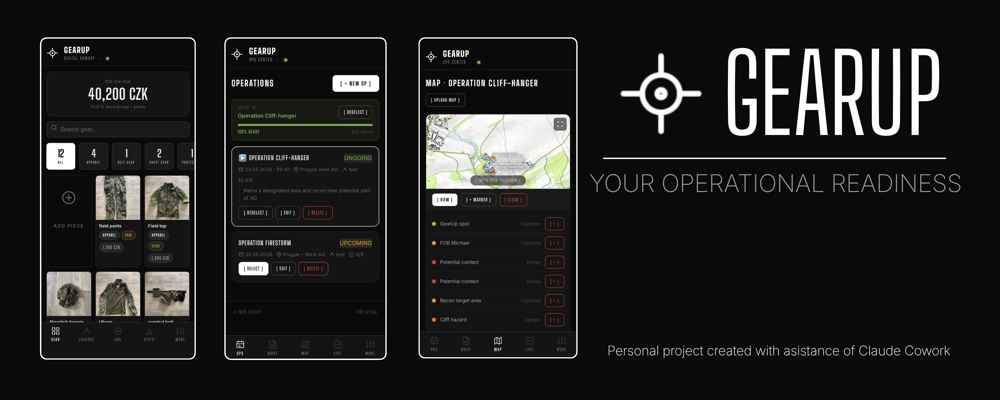

Ideas in motion, code in place.
I build games, web apps, and developer tools — whatever the problem calls for. Each project is a chance to learn something new, solve a real problem, and ship something I'm proud of.
I enjoy spotting gaps and building something to fill them — from a gear management PWA to a VS Code extension on the Marketplace. I work with AI as a genuine part of my process, using it to move faster while keeping all the decisions my own.
My approach is hands-on: I dive in, figure out what works, learn from what doesn't, and keep iterating.
This portfolio reflects that journey — how I think, what I build, and how I grow as a developer.
See my dev journey below!
Structured course expanding on Unity workflows and C# scripting through guided projects and practical game systems.
Beginner-friendly introduction to Unity and C#, used as an initial learning resource to understand core scripting concepts and engine basics.
Project-based frontend course covering HTML, CSS, and JavaScript through short and practical projects.
Completed: Claude 101, Introduction to Claude Cowork, and Claude Code 101 — covering AI fundamentals, prompt engineering, and building with Claude Code.
Claude Code usage limits, always visible.
A VS Code extension that displays your Claude Code usage limits (5-hour session and weekly) as a permanent status bar item — always visible, no commands needed.
Designed and directed by me, code written with AI assistance. All feature decisions, limits access, and product direction are my own.
~/.claude/.credentials.json generated by Claude Codeapi.anthropic.com/api/oauth/usage every 5 minutes (community-discovered endpoint)
Operational management platform for airsoft and milsim environments.
A mobile-first Progressive Web App designed for managing equipment, preparing loadouts, organizing operations, and tracking gear across devices.
Designed and directed by me, with implementation developed through AI-assisted workflow. System architecture decisions, UX design, feature planning, workflow logic, and product direction are my own.
My own long-term solo project — active work in progress
A first-person atmospheric exploration game set after a fictionalized nuclear accident at the Jaslovské Bohunice power plant in 1977 Czechoslovakia, focused on tension, navigation, and environmental storytelling.
Built independently over several months. All models, textures, and level design are created by me.
A precision-based physics game focused on timing, momentum, and player control.
Originally created as part of a Unity course, then expanded beyond the tutorial. I implemented additional systems, UI, and levels independently.
Dice rolling simulator.
A small JavaScript project demonstrating basic interactivity and DOM manipulation. Started from a tutorial and extended with additional functionality and UI improvements.
A small web project focused on JavaScript fundamentals, user interaction, and dynamic DOM updates.
© 2026 Tymofii Yakushevych